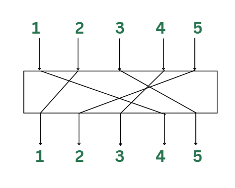
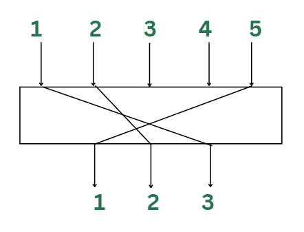

Methods of Modern Cryptography
Difficult parts to remember
Feistel network / SPN (make sure you understand Round/Iterative/Product for FUCKS sakes)
Confusion / Diffusion
- Confusion hides relationship of the Ciphertext and the Key
- S-Box
- Diffusion hides relationship of the Ciphertext and the Plaintext
- P-Box
- Achieve both of these with a Product (Substitution-Permutation) network
Exclusive-OR (XOR)
- Bit-level encryption, easy to implement
- XOR is true exclusively with opposite inputs
| Operand A | Operation | Operand B | Result |
|---|---|---|---|
| 0 | XOR | 0 | 0 |
| 0 | XOR | 1 | 1 |
| 1 | XOR | 0 | 1 |
| 1 | XOR | 1 | 0 |
- Same key is used to encrypt/decrypt
| Plaintext | 1 | 1 | 0 | 0 | 1 | 0 | 1 | 0 |
|---|---|---|---|---|---|---|---|---|
| Key | 1 | 1 | 1 | 1 | 0 | 0 | 0 | 0 |
| Ciphertext | 0 | 0 | 1 | 1 | 1 | 0 | 1 | 0 |
Shift or Rotate
- Bitwise shift the plaintext bits by X amount
Logical Shift
- Bits that are shifted and having no adjacent bit depending on the L/R shift always get 0
{kind=link}
Circular Shift
- Bits that are shifted always get value of their adjacent bit depending on the L/R shift
- Often used for cryptographic applications, lossless method of information transfer

P-Box (Permutation-Box) / DES
- Increases the diffusion & confusion of data, essential property for security
- Diffusion = make each bit of ciphertext depend on as many bits of plaintext as possible (changes in input result in more complex changes of output)
- Permute (reorder) bits of the input data
- Shuffle input bits in predetermined manner (based on a fixed or key-dependent table)
- Output the permuted bits (ciphertext)
Straight P-Box
- No. of inputs and outputs are equal

{kind=link}
Expansion P-Box
- No. of outputs > No. of inputs
- Values get repeated as one input may generate multiple outputs

Compression P-Box
- No. of outputs < No. of inputs
- Bits are dropped as not all inputs are considered for output.

{kind=link}
S-Box (Substitution-Box)
- Non-linear substitution of input bits
- Adds confusion (stops linear and differential cryptanalysis)
- In most implementations the S-Box is a lookup table.
Round/Iterative/Product
- Enhance security by repeatedly applying transformations to data
- Used in DES and AES.
Round (Function)
- Rounds are repeated cycles of operations applied to input data
- Can be substitution, permutation, key-mixing, other non-linear transformations (remember, linear is reversible easily)
- Number of rounds is very important, too few is insecure, too many is too slow (unnecessary)
- Each round uses a unique subkey derived from the main encryption key through a process called the Key Schedule
Iteration
- Repeating the same or similar set of operations over multiple rounds
- Iterating ‘rounds’ confuses and diffuses the data even more
Product
- Product refers to the combination of operations to result in the strong cryptographic algorithm
- Substitution - replacing input bits with different output bits using an S-Box
- Permutation - reordering / shuffling bits
- Key Mixing - XORing the current state with a subkey derived from the encryption key
- Individually, these are not strong, but when combined, their “product” creates a very secure process
💡
Don’t FUCKING forget. Feistel splits in two and uses round function, SPN just does substitution and permutes.
Substitution-Permutation Network (SPN) / Non-Feistel Network
- SPN is a type of block cipher that combines substitution and permutation
- High resistance to cryptanalysis due to its heavy use of non-linear operations (S-Box)
- Strong diffusion and confusion properties
- Substitution - uses S-Boxes to substitute input data
- Adds non-linearity
- Permutation - uses P-Boxes to reorder bits or bytes
- Ensures small changes affect many bits in the output, increases diffusion
- Key Mixing
- Each round involves a layer of substitution followed by permutation, followed by key-mixing (XOR with a round subkey)
- Repeated multiple times
Feistel Network / Feistel Cipher Structure
- Type of block cipher that divides data in 2 halves and processes them in a symmetric way over multiple rounds
- Allows for easy implementation of decryption since the process is symmetric
- Highly flexible, different round functions can be designed to meet different security needs
- Data splitting
- Input data is split into L/R, only one half (normally right) is transformed per round, other half remains unchanged and is swapped
- Round function
- In each round the right half is passed through the round function
- Output of the round function is XORed with the left half, creating a new right half
- After each round, left and right are swapped
- Key Mixing
- Like the SPN, each round involves XORing the data with a round subkey
- Structure
- Round operations are performed on ONE half while the other is XORed and swapped
- Round structure is reversible, meaning encryption and decryption use the same process (but round keys are applied in reverse order)
Comparison: SPN vs. Feistel Network
| SPN (Substitution-Permutation Network) | Feistel Network (Feistel Cipher) | |
|---|---|---|
| Data Processing | Entire block processed in each round | Data is split into two halves, and only one half is processed per round |
| Structure | Substitution + Permutation (S-Box + P-Box) over multiple rounds | Round function applied to one half, then XOR and swap |
| Decryption Process | Requires inversion of all steps (different from encryption) | Same structure used for decryption, just reverse round key order |
| Key Usage | Subkeys used in each round | Subkeys used in each round |
| Examples | AES | DES, Blowfish, Twofish |
| Strengths | High non-linearity, strong diffusion and confusion properties | Symmetric decryption process, flexible design for various round functions |